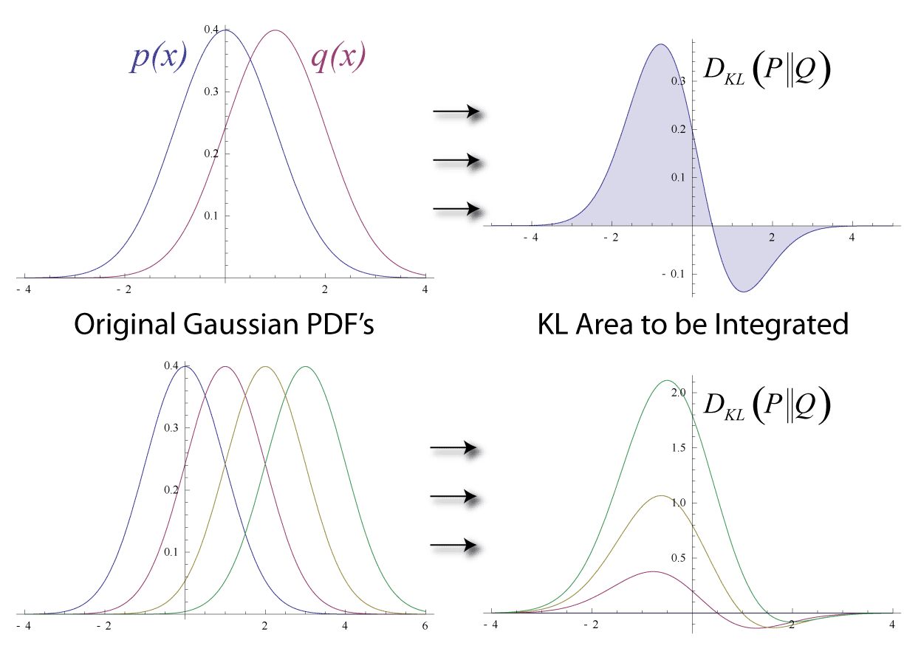
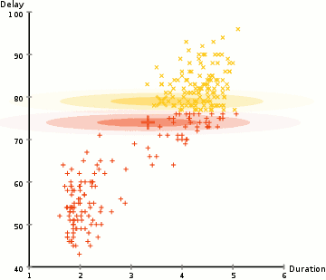

DKL(p∥q)=DKL(q∥p). 거리라고 부르고 싶은데 비대칭이고, 게다가 삼각부등식도 만족하지 않는다. 위상수학에서 배운 거리 공간의 세 공리(양수성, 대칭성, 삼각부등식) 가운데 두 개를 어기는 셈이다. 그렇다면 KL 발산을 "거리"라고 부를 수 있는가?
그런데 이상한 일이 있다. KL 발산은 거리의 자격이 없는데도 실제로는 거리보다 더 많이 쓰인다. 기계학습의 손실 함수로, 변분추론의 최적화 목표로, 강화학습에서 정책 사이의 차이를 재는 잣대로, 정보이론의 채널 용량 계산에 — KL 발산은 어디에나 있다. 거리의 공리를 만족하지 못하는 것이 "결함"이 아니라 오히려 "특징"이라면?
더 근본적인 질문을 해 보자. 비대칭이 실제로 의미를 갖는 상황이 있는가? 있다. "p가 참인데 q로 근사하는 것"과 "q가 참인데 p로 근사하는 것"은 질적으로 다른 행위다. 봉우리가 둘인 분포 p를 봉우리 하나짜리 정규분포 q로 근사한다고 하자. D(p∥q)를 줄이면 q는 p가 있는 곳을 하나도 놓치지 않으려고 두 봉우리를 모두 덮을 만큼 넓게 퍼지고, 그 대가로 아무것도 없는 골짜기에 확률을 쏟는다. 반대로 D(q∥p)를 줄이면 q는 p가 거의 없는 곳에 확률을 두기를 극도로 꺼려서 한쪽 봉우리에만 딱 달라붙는다. 두 오류는 본질적으로 다르며, 비대칭인 발산만이 이 차이를 구별해 낸다.
패턴

먼저 KL 발산을 식으로 적어 두자. 이산 분포라면 다음과 같고, 연속 분포라면 합이 적분으로 바뀐다.
1차 항이 없는 것은 q=p에서 발산이 최솟값 0을 갖기 때문이다. 2차 항은 δ를 −δ로 바꿔도 그대로이므로, 두 점이 충분히 가까우면 D(p∥q)≈D(q∥p)가 된다. 이 2차 항의 계수 gij가 바로 리만 계량이고, KL 발산의 경우 이 계량은 피셔 정보행렬과 일치한다.
발산이 리만 계량을 "유도한다"는 이 사실은 깊은 의미를 갖는다. 비대칭적이고 대역적인(global) 발산이 국소적(local)으로는 대칭적인 리만 기하학을 낳는다. 지구 표면이 전체적으로는 곡면이지만 충분히 작은 영역에서는 평면처럼 보이는 것과 같다. 발산은 "먼 곳의 기하학"이고, 리만 계량은 "가까운 곳의 기하학"이다.
발산의 비대칭은 3차 항에서 처음 모습을 드러내며, 이것이 바로 이전 장에서 만난 큐빅 텐서C와 이어진다. 발산이 얼마나 비대칭인지가 쌍대 접속 ∇와 ∇∗가 얼마나 벌어지는지를 결정하는 것이다. 대칭인 발산(예: 유클리드 거리의 제곱)에서는 큐빅 텐서가 0이고, 두 접속이 레비-치비타 접속 하나로 합쳐진다.
따라 계산해 보기 1 — 두 정규분포 사이의 KL과 피셔 계량
정규분포 N(μ,σ2) 전체는 좌표 (μ,σ)를 갖는 2차원 매니폴드다. 두 정규분포 사이의 KL 발산은 적분을 직접 계산하면 닫힌 식으로 나온다.
이 되어, σ=1에서 21(0.01+2×0.0025)=0.0075를 준다. 두 방향의 정확한 값 0.00684와 0.00746이 모두 이 값 가까이에 있고, 둘의 차이 0.0006은 δ의 세제곱 크기다. 이것이 "비대칭은 3차 항에서 나타난다"는 말의 실제 모습이다.
정리 (일반화된 피타고라스 정리)
쌍대 평탄 공간에서 놀라운 정리가 성립한다. 10장처럼 ∇를 e-접속, ∇∗를 m-접속, D를 KL 발산으로 두자. M이 ∇에 대해 곧은(e-평탄한) 부분매니폴드이고, q가 p에서 M으로 내린 ∇∗-사영(m-사영), 곧 p와 q를 잇는 ∇∗-측지선이 M과 직교하는 점이라 하자. 그러면 M 위의 모든 점 r에 대해 다음이 성립한다.
이것은 유클리드 기하의 피타고라스 정리 ∣pr∣2=∣pq∣2+∣qr∣2의 정보기하학적 일반화다. "거리의 제곱"이 "발산"으로, "직교"가 "p에서 내려오는 m-측지선과 M 안의 e-측지선의 직교"로 바뀌었다. 보통의 피타고라스 정리가 직각삼각형에서만 성립하듯, 이 정리도 서로 다른 두 종류의 측지선이 직교하는 “쌍대 직교” 조건이 있어야 성립한다. 이 등식에서 곧바로 D(p∥r)≥D(p∥q)가 나오므로, q가 M 위에서 p에 가장 가까운 점이라는 것도 함께 따라온다.
따라 계산해 보기 2 — 피타고라스 등식을 숫자로 확인하기
분산이 1로 고정된 정규분포 M={N(μ,1)}은 지수족이라 e-평탄하다. M 밖의 점 p=N(0,22)을 M으로 m-사영하면, 평균만 맞춘 q=N(0,1)이 나온다(m-사영은 평균 같은 기댓값을 맞추는 사영이다). M 위의 다른 점 r=N(1,1)을 골라 위의 KL 식으로 세 변을 계산하면
D(p∥r)=log21+24+1−21≈1.3069
D(p∥q)=log21+24−21≈0.8069
D(q∥r)=0+21+1−21=0.5
이고, 실제로 0.8069+0.5=1.3069가 된다. r을 M 위의 어느 점으로 바꿔도 등식은 유지된다.
이 정리의 가장 아름다운 응용은 EM 알고리즘의 기하학적 해석이다. 관측 데이터와 맞는 분포들의 모임(데이터 매니폴드)과 모델 분포들의 모임(모델 매니폴드)을 생각하면, EM 알고리즘의 E-단계는 현재 모델을 데이터 매니폴드로 내리는 e-사영이고, M-단계는 그 결과를 모델 매니폴드로 내리는 m-사영이다. 각 단계에서 피타고라스 정리가 적용되므로 두 매니폴드 사이의 발산은 매 단계 결코 늘어나지 않는다. EM 알고리즘이 한 번도 뒷걸음질하지 않는 것은 이 기하학의 필연이다. 다만 도착하는 곳은 가장 가까운 점이 아니라 국소적으로 가장 가까운 점일 수 있다.

변분추론(variational inference)도 같은 틀로 이해된다. 다루기 쉬운 분포족 Q 위에서 참 사후분포 p에 가장 가까운 점을 D(q∥p)로 재어 찾는 것이 e-사영(reverse KL 최소화)이다. 블라후트-아리모토 알고리즘, 미러 디센트 등 정보이론과 최적화의 핵심 알고리즘들도 이 교대 사영의 틀로 한데 묶인다.
정의
발산 (비대칭 거리 / Asymmetric Distance, D(p∥q)) — 두 점 사이의 “방향 있는 떨어짐”. 세 가지 조건을 만족한다: (1) D(p∥q)≥0, (2) D(p∥q)=0⟺p=q, (3) q=p 근방에서 D(p∥p+δ)=21gijδiδj+O(δ3)으로, 양정치 이차형식을 유도. 대칭성과 삼각부등식은 요구하지 않는다. 거리보다 약한 조건이지만, 리만 계량을 유도하기에는 충분하다.
브레그만 발산 (볼록함수가 만드는 비대칭 거리 / Convex Gap Distance) — 볼록함수 ϕ로 다음과 같이 정의한다.
기하학적으로는 q에서 그은 접선(접평면)이 p 위치에서 함수 그래프보다 얼마나 아래에 있는지다. 볼록함수의 그래프는 항상 접선 위에 있으므로 Dϕ≥0이다. 확률벡터에서 ϕ(x)=∑xilogxi로 잡으면 KL 발산이, ϕ(x)=∥x∥2으로 잡으면 유클리드 거리의 제곱이 나온다. 쌍대 평탄 공간의 표준 발산(canonical divergence)은 언제나 이런 브레그만 발산이다.
사영 (가장 가까운 점 찾기 / Nearest Point Finder, Π) — 부분매니폴드 M 위에서 주어진 점 p로부터 발산을 최소화하는 점 q∗=argminq∈MD(p∥q). 발산이 비대칭이므로 argminD(p∥⋅)와 argminD(⋅∥p)는 일반적으로 다른 점을 준다. 이 구별이 m-사영과 e-사영의 기원이다.
m-사영 / e-사영 (합의 사영 / 곱의 사영) — m-사영은 argminq∈MD(p∥q)로, 사영점과 원래 점을 잇는 m-측지선이 M에 직교한다. M이 e-평탄하면(지수족이면) 이 점은 하나뿐이고, 평균 같은 기댓값을 p와 맞추는 점이 된다. e-사영은 argminq∈MD(q∥p)로, e-측지선이 M에 직교하며 M이 m-평탄할 때 하나로 정해진다. EM 알고리즘에서 E-단계는 e-사영, M-단계는 m-사영이다. 변분추론에서 ELBO 최대화는 e-사영에 해당한다.
핵심 인물과 일화
솔로몬 쿨백 (Solomon Kullback, 1907–1994) & 리처드 라이블러 (Richard Leibler, 1914–2003)
KL 발산의 탄생 배경은 순수 수학이 아니라 암호분석이다. 두 사람은 모두 미국 국가안보국(NSA)과 그 전신 기관에서 암호 업무에 몸담았다. 쿨백은 1930년대부터 육군 신호정보국(SIS)의 초창기 암호분석가였고, 제2차 세계대전 동안 일본 암호 해독 작업에 참여했다.
1951년, 두 사람은 Annals of Mathematical Statistics에 "정보와 충분성에 관하여(On Information and Sufficiency)"라는 논문을 발표한다. 핵심 질문은 이것이었다: 두 확률분포 p와 q가 주어졌을 때, 관측 데이터로 이 둘을 얼마나 잘 구별할 수 있는가?
그 답으로 제시된 것이 앞에서 본 DKL(p∥q)=∑xp(x)logq(x)p(x)이다. 이 양은 "p가 참일 때 관측 하나가 q가 아닌 p를 지지하는 증거(로그 가능도비)의 평균"이며, "p가 참인데 q라고 잘못 가정하면 평균적으로 얼마나 많은 정보를 잃는가"로 읽을 수도 있다.
쿨백과 라이블러 자신도 이것이 비대칭이라는 것을 알고 있었다. 이 비대칭은 우연이 아니다. "p가 참인데 q라고 착각하는 것"과 "q가 참인데 p라고 착각하는 것"은 질적으로 다른 실수이기 때문이다. 이 비대칭이야말로 KL 발산이 "거리"가 아닌 "발산"인 이유이며, 동시에 정보기하학에서 쌍대 구조가 나타나는 근본적 원인이다.
레프 브레그만 (Lev M. Bregman, 1941–, 사망 연도 불명)
KL 발산은 확률분포에 특화된 양이다. 이것을 더 일반적인 틀로 확장한 사람이 소련의 수학자 레프 브레그만이다.
1967년, 브레그만은 볼록 최적화 문제를 연구하다가 임의의 볼록함수 ϕ에 대해 함수값과 접선의 차이, 곧 Dϕ(p∥q)=ϕ(p)−ϕ(q)−⟨∇ϕ(q),p−q⟩로 발산을 정의할 수 있음을 관찰한다. ϕ(x)=∑xilogxi로 잡으면 KL 발산이 나오고, ϕ(x)=∥x∥2으로 잡으면 보통의 유클리드 거리의 제곱이 나온다.
브레그만 발산은 정보기하학의 핵심 도구가 되었다. 쌍대 평탄 공간의 표준 발산은 항상 브레그만 발산이며, 이것이 자연스러운 피타고라스 정리를 만족한다는 것이 아마리의 이론으로 밝혀진다.
직접 움직여 보기
세 가지 결과를 갖는 분포들의 공간(확률 삼각형) 위에 두 분포 p와 q를 놓았다. 두 점을 끌어 보면서 D(p∥q)와 D(q∥p)가 얼마나 다른지, q를 p에 가까이 가져가면 둘이 피셔 계량의 이차식 21gijδiδj로 함께 수렴하는지 확인해 보자. p 주변의 세 곡선은 "발산이 같은 값인 점들"이다. 수준을 키우면 세 곡선이 어떻게 갈라지는지도 보자.
연습문제와 같이 풀기
각 문제를 먼저 혼자 풀어 본 뒤, 바로 아래 세션에서 선생님과 두 학생이 어떻게 풀어 가는지 따라가 보자.
문제 1 — 동전 두 개의 KL
확인 앞면 확률이 0.5인 동전 p=Bern(0.5)와 0.9인 동전 q=Bern(0.9)에 대해 D(p∥q)와 D(q∥p)를 자연로그로 계산하라. 계산 도중 음수인 항이 나오면 그것이 무엇을 뜻하는지도 설명하라.
같이 풀기 세션 1
김민준numpy로 바로 했어요. D(p∥q)=0.5log0.90.5+0.5log0.10.5≈0.511이고, D(q∥p)=0.9log1.8+0.1log0.2≈0.368이에요. 역시 비대칭이네요.
이서연잠깐, 두 번째 항 0.1log0.2가 −0.161이야. 첫 번째 식에서도 0.5log0.90.5가 음수고. 발산은 0 이상이어야 하잖아. 음수가 섞이면 어디가 틀린 거 아닐까?
선생님좋은 의심이에요. 발산이 0 이상이라는 건 어디에 대한 약속이죠? 항 하나하나예요, 합 전체예요?
이서연합 전체요. 아, logqp는 p<q인 칸에서 당연히 음수가 되는구나. 확률의 합이 둘 다 1이니까 어떤 칸에서 p가 더 크면 다른 칸에선 반드시 q가 더 커야 하고, 그러니 음수 항은 피할 수가 없네.
선생님그래도 합이 0 이상인 이유는 log가 오목함수라서예요. 옌센 부등식으로 −D(p∥q)=∑plogpq≤log∑ppq=log1=0이 되죠.
이서연해석학 시간에 적분값이 양수라고 적분하는 함수까지 어디서나 양수인 건 아니라고 몇 번이나 들었는데, 합으로 바뀌니까 또 헷갈렸어요.
문제 2 — 가까운 두 정규분포와 피셔 계량
계산p=N(0,1), q=N(0.1,1.052)에 대해 정확한 D(p∥q)를 구하고, 2차 근사 21gijδiδj와 비교하라. 좌표를 (μ,σ) 대신 (μ,v=σ2)로 잡아도 같은 근삿값이 나오는지 확인하라.
같이 풀기 세션 2
김민준정확한 값은 따라 계산해 보기 식에 넣으면 0.00684예요. 근사는 δμ=0.1, δσ=0.05니까 21(0.12+0.052)=0.00625요. 좀 어긋나네요.
이서연너 계량을 단위행렬로 놨네. μ랑 σ는 그냥 좌표 이름표일 뿐이고, 눈금은 피셔 계량이 정해. g=diag(1/σ2,2/σ2)라서 σ 방향에 2가 붙어. 그러면 21(0.01+2×0.0025)=0.0075야.
김민준아, 3장에서 좌표 격자 간격이 곧 거리는 아니라고 그렇게 들었는데… 좌표만 보고 유클리드로 계산해 버렸네요.
선생님민준 학생은 과제에서 이런 실수 해 본 적 없어요?
김민준있어요. 입력 특성 두 개를 표준화 안 하고 거리를 쟀다가 단위가 큰 특성이 결과를 다 먹어 버려서, 조교가 “특성마다 눈금이 다르잖아요” 하고 코멘트를 달았어요.
이서연그럼 분산 좌표도 해 볼게. δv=1.052−1=0.1025니까, 같은 계량에 넣으면 21(0.01+2×0.10252)≈0.0155. 어, 두 배가 넘게 나오네?
선생님계량을 (μ,σ) 좌표에서 구해 놓고 (μ,v) 좌표의 변위를 넣었죠. 좌표를 바꾸면 계량 성분도 같이 바뀌어요.
이서연v=σ2이면 dv=2σdσ니까, σ22dσ2=σ22⋅4σ2dv2=2v2dv2. 그러면 gvv=2v21이고, 21(0.01+0.10252/2)≈0.0076. 이제 0.0075랑 거의 같아요. 남은 차이는 3차 항이고요.
선생님그래요. 근삿값이 좌표에 따라 흔들리면 안 된다는 것, 그게 계량이 텐서여야 하는 이유예요. 다음 장에서 이 변환 법칙이 학습 알고리즘을 바꾸게 됩니다.
김민준D(p∥q) 최소화는 최대가능도랑 같잖아요. p에서 뽑은 데이터로 정규분포를 맞추는 거니까, 제일 그럴듯한 봉우리 하나에 딱 맞출 것 같아요. μ=3, σ=1쯤이요.
이서연난 다르게 나왔어. D(p∥q)=−H(p)−Ep[logq]이고 앞 항은 q와 상관없으니까, Ep[logq]만 키우면 돼. 정규분포면 이건 평균과 분산을 p와 맞추는 거라, μ=0, σ2=1+9=10.
선생님민준 학생, 서연 학생의 q=N(0,10)과 민준 학생의 q=N(3,1) 중에 어느 쪽이 D(p∥q)가 작을지, 한 번 돌려 볼래요?
김민준수치적분 해 보니까… N(0,10)은 0.46인데, N(3,1)은 8.3이 나와요. 왼쪽 봉우리 근처에서 q가 거의 0이라 logqp가 폭발하네요.
선생님그게 D(p∥q)의 성격이에요. p가 있는 곳에서 q가 0에 가까우면 벌점이 무한히 커지니까, q는 p가 있는 곳을 전부 덮으려고 넓게 퍼져요. 최대가능도가 봉우리 하나를 고른다는 건 오해예요. 데이터 전체의 가능도를 보거든요.
김민준그러니까 이건 평균이랑 분산을 맞추는 사영이고… 따라 계산해 보기 2에서 본 m-사영이네요. 정규분포족이 지수족이라 답이 하나로 정해지고요.
이서연(나)는 쉬워 보여. 문제가 좌우대칭이니까 답도 좌우대칭이어야지. μ=0으로 두고 σ만 최적화하면 σ≈2.74, 발산은 0.84.
선생님대칭인 문제의 답은 반드시 대칭이어야 할까요? 서연 학생 식으로 μ를 조금 옮겨서 μ=3, σ=1을 넣어 보면요?
이서연D(q∥p)가… 0.69? 내 답 0.84보다 작아. 대칭인 점보다 한쪽으로 치우친 점이 더 좋다니, 이상한데.
이서연아, 대칭인 건 답 하나가 아니라 답들의 모임이구나. μ≈2.98이 최소라면, 거울에 비친 μ≈−2.98도 최소야. 최소점 두 개가 서로를 비추고 있으니까 모임은 대칭이지만, 점 하나하나는 대칭일 필요가 없어.
선생님그래서 D(q∥p)는 q가 p가 없는 곳에 확률을 두는 걸 싫어해요. 골짜기에 확률을 쏟느니 봉우리 하나를 확실히 잡는 거죠. 이게 e-사영이고, 변분추론이 사후분포의 봉우리 하나만 잡는 경향이 있는 이유예요. 정규분포족은 m-평탄하지 않아서 e-사영이 하나로 안 정해지는 것도 여기서 보이고요.
김민준그럼 (가)는 봉우리를 다 덮는 넓은 분포, (나)는 봉우리 하나에 붙는 좁은 분포. 출발 문제에서 말한 게 이거였네요.
이서연미적분 시간에 f(x)=x4−2x2의 최솟값을 구할 때도 그랬어요. 좌우대칭인 함수인데 최솟값은 x=±1 두 곳이고, 대칭인 자리 x=0은 오히려 극대였죠. 알면서도 똑같은 함정에 빠졌네요.
선생님대칭은 답을 하나로 정해 주는 게 아니라 답들을 짝지어 줄 뿐이에요. 둘 다 잘 찾아냈어요.